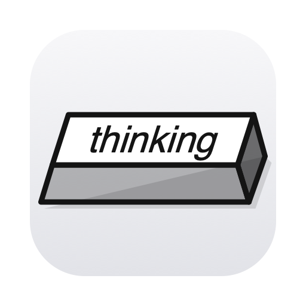

aI'm Thinking · Menu bar app
Hear your agent think.
Keyboard sounds that follow how hard Claude Code, Codex or Cursor is thinking, writing, and editing.
macOS 26.0 or later on Apple silicon.
Mac App StoreProcessed on your Mac
The app reads the agent's local session files read-only. It has no accounts, analytics, advertising, or crash reporting, and it makes no network connections.